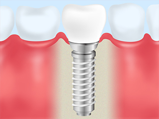
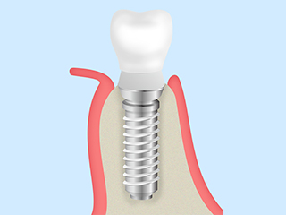
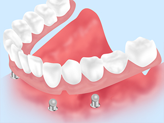
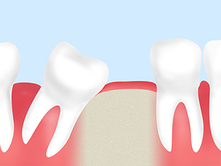
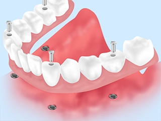

- TOP
- インプラント治療｜インプラント治療とは

失った歯を放置していると、歯並びや噛み合わせに悪影響となる可能性があります。大切なのは適切な治療で噛む機能をしっかり回復すること。こちらではそのための治療法の一つ、インプラント治療の特徴やメリット・デメリットをご紹介します。治療についてのご不明点・ご不安などあれば、お気軽に南区道徳の歯医者「名古屋みなみ歯科・矯正歯科」までご相談ください。
Implant失った歯の機能を回復し、自然な噛み心地を実現
～インプラント治療について～
インプラント治療とは？

インプラントと呼ばれる人工歯根を埋め込み、その上に人工の歯冠を取り付ける治療法です。天然歯と同じような自然な噛み心地と見た目を得られることが大きな魅力。入れ歯やブリッジのように周囲の歯に負担がかかることもありません。
歯科インプラントについて

現在使われているインプラントの原型は、スウェーデンのブローネンマルク博士によって開発されたものです。臨床への応用は1965年からスタートし、その実績の中で条件によっては数十年間機能し続けることがわかっています。
さまざまなメーカーの製品が普及していますが「、現在主流となっている素材はチタンです。サイズやシステムにも種々の改良が加えられ、インプラントは日々進歩を続けています。日本のインプラント製造技術は他のモノづくり分野と同様に世界でも最高水準です。
インプラント治療のメリット・デメリット
メリット
| 自然な噛み心地 | 硬い物、粘度の高い物でも、まるで自分の歯のようにしっかり噛むことができます。 |
|---|---|
| 外れる心配がない | 入れ歯のように会話や食事の際に外れてしまう心配がありません。 |
| 周囲の歯に負担がかからない | 入れ歯では周囲の歯に負担がかかることがありますが、インプラントはそういった心配がありません。またブリッジ治療のように周囲の健康な歯を削る必要もありません。 |
| 骨が痩せない | 歯を失ったまま放置すると、役割を失った歯を支える骨が痩せてしまいます。インプラントによって歯の機能を取り戻すことで、骨が痩せるのを防ぐことができます。 |
| 見た目 | 人工歯の選択肢が幅広く、見た目が自然なものを選ぶことができます。 |
デメリット
| 費用が比較的高額 | 保険適用外の治療で、自費診療となります。そのため費用負担が保険診療の治療よりも高くなります。 |
|---|---|
| 手術が必要 | インプラントの埋入手術を行う必要があります。 |
| 治療期間が比較的長い | 治療期間は通常4～6か月ほど。ブリッジなどの他の治療法よりも長いと言えます。 |
| 治療後のケアが必要 | インプラント周囲炎のリスクがあるため、適切なメインテナンスが必要です。 |
歯が抜けたまま放置すると生じるリスク

1本の歯を失うと、その影響は両隣の歯だけでなく、お口全体の歯並び・噛み合わせに影響を与えることもあります。たとえば隣の歯が傾いてきたり、噛み合っていた歯が伸びてきたりして、歯並び・噛み合わせのバランスが乱れてしまうことも。その結果、全身に歪みが生じるなどの可能性も考えられます。またしっかり噛むことができないまま食事をすることになれば、消化器官にも負担がかかります。
歯を失った場合はそのまま放置せず、適切な治療を受けてきちんと歯の機能を回復することが大切なのです。
名古屋みなみ歯科・矯正歯科でインプラント治療を受けるメリット

当院は医療法人正翔会のグループ医院です。当グループに在籍しているドクター全員がグループ医院を巡回することで、さまざまな症例への対応を可能に。常に歯科医師同士で情報・技術を共有し、診療・治療レベルの向上に尽力しています。また、グループ内の技工所との迅速な連携が可能。患者様のお口の状態やご要望を細やかに指示し、患者様に最適な技工物をおつくりすることができます。
インプラント治療の流れ
- 【1】ご予約
- まずはお気軽にお問い合わせください。無料カウンセリングのご予約はお電話、またはWeb予約フォームよりうけたまわっております。
- 【2】初診・問診・カウンセリング
- ご来院の際は受付にて、問診票にご記入ください。その後、カウンセリングを行って、歯科医師が患者様のご要望やお悩みをじっくりとおうかがいします。その上で、患者様に合った治療の概要や進め方、費用のことなどをわかりやすくご説明します。
- 【3】基本検査と精密検査
- 虫歯や歯周病などの病気がないか、一般的な検査を実施。その後、CT画像撮影、口腔内撮影、必要に応じて血液検査など、各種精密検査を行います。これらの結果をもとに最適な治療プランを立案します。
- 【4】治療プランのご提案
- 診断結果と治療プランをわかりやすくご説明します。治療内容・治療期間、治療中の注意点や費用のことまですべて丁寧にお伝えします。もし何か不安や疑問があれば、お気軽にご質問ください。患者様が心から納得されていないにも関わらず、治療を開始することはありません。
- 【5】埋入手術
- 局所麻酔をして、顎の骨にインプラントを埋め込む手術を行います。埋入手術は日帰りでの処置が可能です。入院の必要はありません。
- 【6】抜糸
- 埋入手術から約1～2週間後に抜糸と傷口の確認を行います。
- 【7】治癒機関
- インプラントと骨がしっかり結合するまで、一般的には3～6か月の安静期間を設けます。その後は3週間から1ヶ月に1回程度ご来院いただき、お口の状態をチェックします。
- 【8】アバットメント装着
- インプラントと顎の骨の結合を確認し、人工歯を取り付けるための支柱（アバットメント）を装着します。
- 【9】人工歯の装着
- 歯茎の状態が落ち着いたところで人工歯を作るための型を採取。完成した人工歯を装着して、インプラント治療終了となります。
- 【10】メインテナンス
- インプラント治療後はインプラント周囲炎などのトラブルのリスクがあります。お口の中を清潔な状態に保てるよう、丁寧なケアを心掛けましょう。また、歯科医院で定期的な検診・メインテナンスを受けることも大切です。当院では半年に一度の定期検診をお勧めしています。